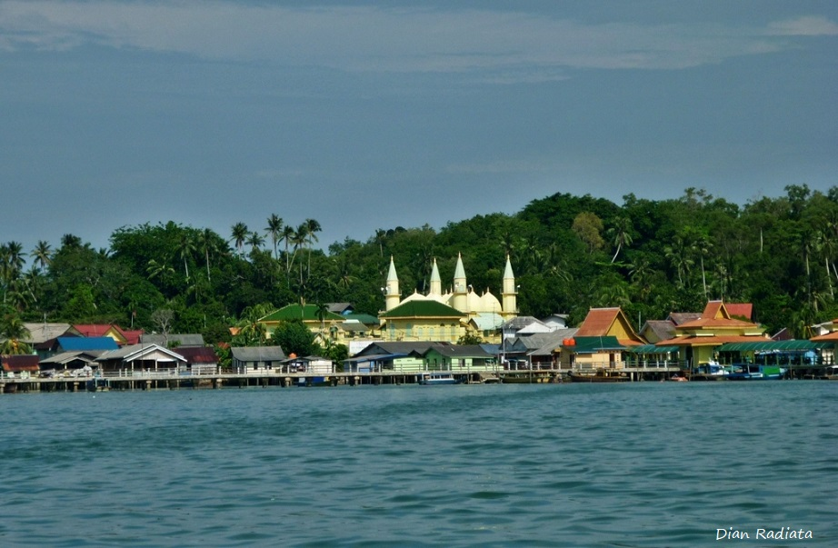
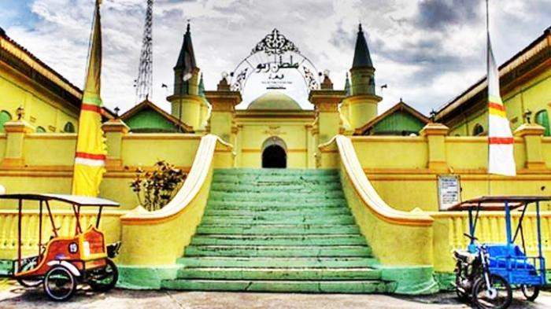
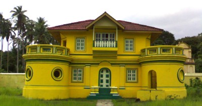
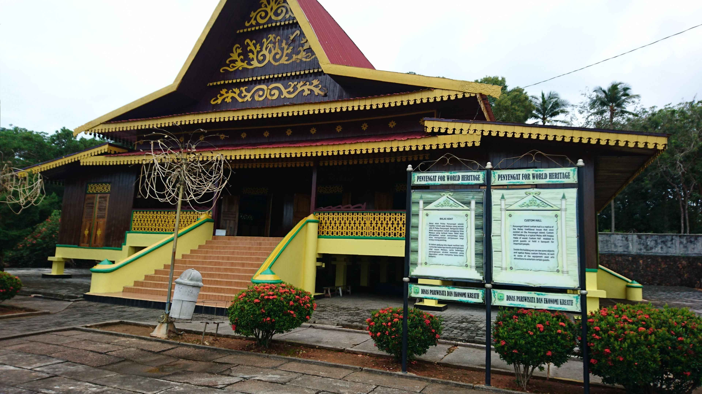
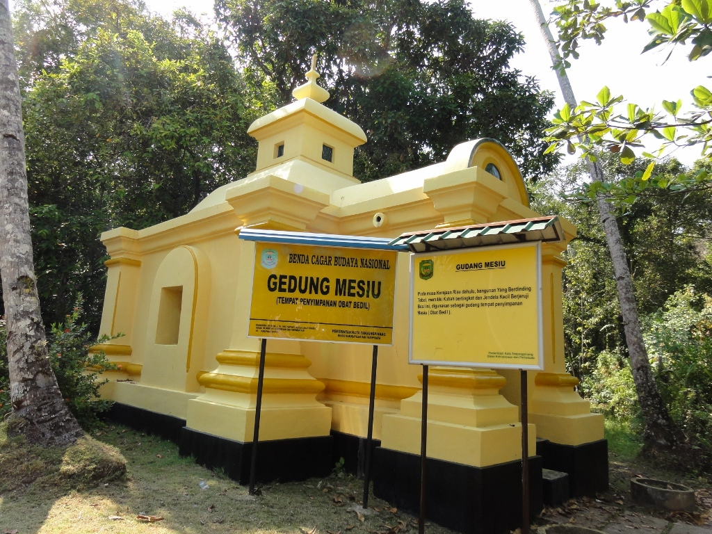
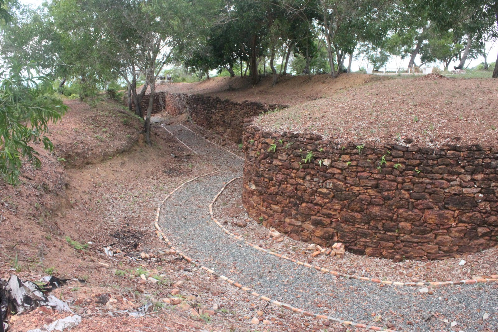
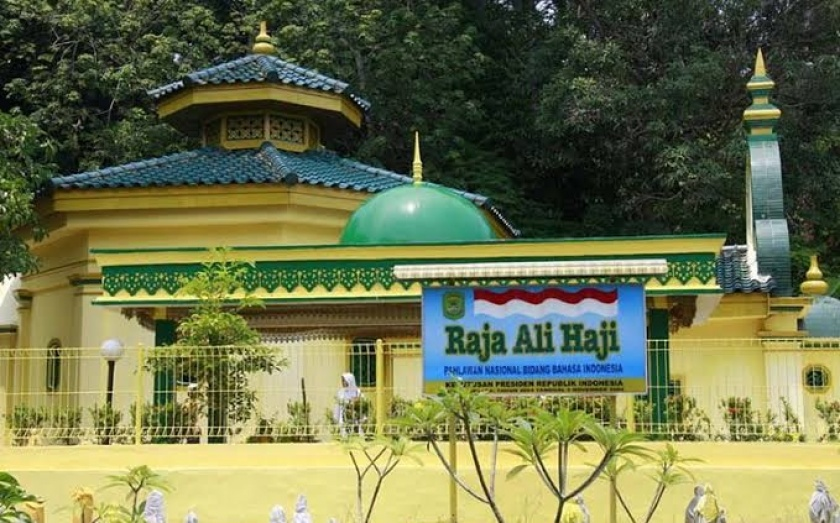
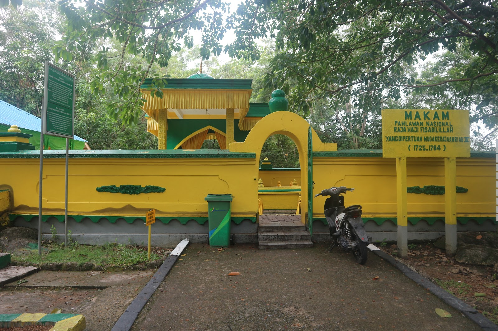
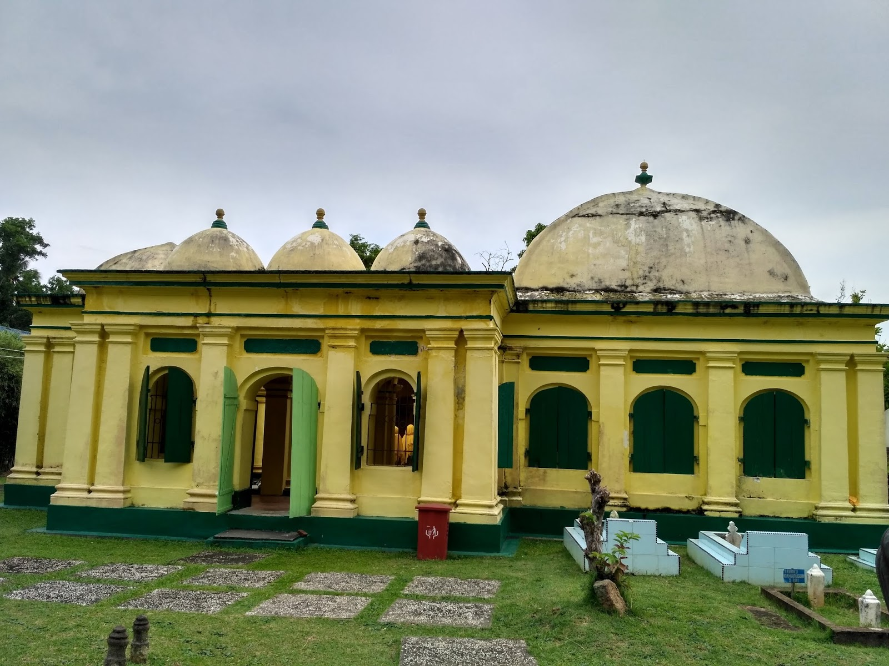
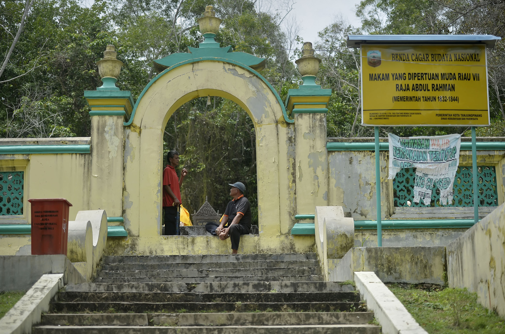

Sejarah

Menurut cerita, pulau mungil di muara Sungai Riau, Pulau Bintan ini sudah lama dikenal oleh para pelaut sejak
berabad-abad yang lalu karena menjadi tempat persinggahan untuk mengambil air tawar yang cukup banyak tersedia di
pulau ini. Belum terdapat catatan tertulis tentang asal mula nama pulau ini. Namun, dari cerita rakyat setempat,
nama ini berasal dari nama hewan sebangsa serangga yang mempunyai sengat. Menurut cerita tersebut, ada para pelaut
yang melanggar pantang-larang ketika mengambil air, maka mereka diserang oleh ratusan serangga berbisa.
Binatang ini yang kemudian dipanggil Penyengat dan pulau tersebut dipanggil dengan Pulau Penyengat.
Sementara orang-orang Belanda menyebut pulau tersebut dengan nama Pulau Mars.
Tatkala pusat pemerintahan Kerajaan Riau bertempat di pulau itu ditambah menjadi Pulau Penyengat Inderasakti.
Pada 1803, Pulau Penyengat telah dibangun dari sebuah pusat pertahanan menjadi negeri dan kemudian berkedudukan
Yang Dipertuan Muda Kerajaan Riau-Lingga sementara Sultan berkediaman resmi di Daik-Lingga. Pada tahun 1900,
Sultan Riau-Lingga pindah ke Pulau Penyengat. Sejak itu lengkaplah peran Pulau Penyengat sebagai pusat pemerintahan,
adat istiadat, agama Islam dan kebudayaan Melayu
Bangunan Bersejarah
Masjid Raya Sultan Riau

Masjid ini awalnya dibangun oleh Sultan Mahmud pada tahun 1803. Kemudian pada masa pemerintahan Yang
Dipertuan Muda VII Raja Abdurrahman, tahun 1832 masjid ini direnovasi dalam bentuk yang terlihat saat ini.
Bangunan utama masjid ini berukuran 18 x 20 meter yang ditopang oleh 4 buah tiang beton. Di keempat sudut
bangunan, terdapat menara tempat Bilal mengumandangkan adzan. Pada bangunan Masjid Sultan Riau terdpat 13
kubah yang berbentuk seperti bawang. Jumlah keseluruhan menara dan kubah di Masjid Sultan Riau sebanyak 17 buah
yang melambangkan jumlah rakaat salat wajib lima waktu sehari semalam.
Di sisi kiri dan kanan bagian depan masjid terpdat bangunan tambahan yang disebut dengan Rumah Sotoh
(tempat pertemuan). Menurut sejarahnya, masjid ini dibangun dengan menggunakan campuran putih telur,
kapur, pasir dan tanah liat.
Istana Kantor

Istana Kantor adalah istana dari Yang Dipertuan Muda Riau VIII Raja Ali (1844-1857), atau juga yang disebut dengan
Marhum Kantor. Selain digunakan sebagai kediaman, bangunan yang dibangun pada tahun 1844 ini juga difungsikan
sebagai kantor oleh Raja Ali. Istana Kantor berukuran sekitar 110 m2 dan menempati areal sekitar satu hektar yang
seluruhnya dikelilingi tembok. Bangunan dan puing yang masih ada memperlihatkan kemegahannya pada masa lalu.
Balai Adat Melayu

Balai Adat Pulau Penyengat adalah replika rumah adat Melayu yang pernah ada di Pulau Penyengat. Bangunan Balai
Adat merupakan rumah panggung khas Melayu yang terbuat dari kayu. Balai Adat difungsikan untuk menyambut tamu
atau mengadakan perjamuan bagi orang-orang penting.>Di dalam gedung, kita dapat melihat tata ruang dan beberapa
benda perlengkapan adat resam Melayu, serta berbagai perlengkapan atraksi kesenian yang digunakan untuk
menjamu tamu-tamu tertentu.Di bagian bawah Balai Adat ini terdapat sumur air tawar yang konon sudah berabad lamanya
dan sampai sekarang airnya masih mengalir dan dapat langsung diminum.
Gedung Mesiu

Gedung ini merupakan bangunan berdinding tebal dan berwarna kuning kusam. Ada kubah bertingkat di atasnya.
Menurut pemandu wisata kami, Sapril Sembiring, gedung ini dulunya merupakan gudang tempat penyimpanan mesiu.
"Ini untuk meriam, untuk isi bedil," kata Sapril. Selain itu, gedung ini pernah menjadi penjara di masa kerajaan.
Konon, ada empat gedung serupa di Pulau Penyengat.
Bentang Pertahanan Bukit Kursi

Benteng Pertahanan Bukit Kursi digunakan sebagai alat pertahanan sekaligus untuk mempertahankan dan menjaga kedaulatan
daerah dari serangan musuh pada zaman perang dahulu. Asal muasal nama benteng ini karena lokasinya yang berada di
daerah yang bernama Bukit Kursi. Area Bukit Kursi dipilih untuk membangun benteng karena dinilai cukup strategis.
Benteng dibangun di dataran tinggi di Pulau Penyengat dan berhadapan langsung dengan laut lepas sehingga dapat
sembari menikmati pemandangan alam di bagian seberang. Alasan lainnya dibangun benteng di daerah ini karena Pulau
Penyengat di zaman dahulu merupakan pusat pemerintahan sehingga dirasa perlu adanya pertahanan.
Makam Raja Melayu
Makam Raja Ali Haji

Bapak Bahasa Melayu Indonesia, ialah sapaan untuk Raja Ali Haji. Ia berasal dari Selangor, kelahiran tahun 1808,
dan sangat berperan dalam melahirkan pedoman tata bahasa Melayu standar. Raja Ali Haji banyak menghasilkan karya
sastra yang mengakar pada tradisi kesusastraan Islam. Karyanya yang terkenal yaitu “Gurindam Dua Belas” pada tahun
1847. Karya sastra ini diabadikan di sepanjang dinding bangunan makam Raja Ali Haji.
Makam Raja Haji Fisabillilah

Makam Raja Haji Fisabilillah dikelilingi dengan tembok berwarna kuning yang tidak begitu tinggi. Sesampainya di
depan makam, Anda akan menyaksikan bangunan makam dengan ornamen-ornamen khas Melayu. Kompleks makam raja terbagi
menjadi 4 kelompok. Di makam ini juga terdapat makam habib Syeh yang dikunjungi oleh peziarah.
Di dalam makam terdapat cungkup yang menaungi makam Raja Haji Fisabilillah. Cukup ini dibuat dengan kondisi
terbuka dan hanya memiliki beberapa tiang dan sebuah atap. Dengan adanya cungkup ini, pengunjung atau
peziarah bisa lebih nyaman ketika berziatah ke makam. Jirat makam raja terbuat dari bahan marmer serta
pintu masuk yang berbentuk relung terdapat di bagian barat makam.
Makam Raja Jafar

Komplek makam ini tepatnya berada di dalam Pulau Penyengat, Kota Tanjung Pinang, Provinsi Kepulauan Riau, Indonesia.
Terdapat pilar-pilar yang menghiasi dan sebuah kubah kecil yang terletak di samping kolam yang sering digunakan
sebagai tempat berwudhu untuk menunaikan ibadah shalat bagi pemeluk agama Islam. Dengan warna dinding kuning keemasan
serta sedikit sentuhan warna hijau membuat kompleks makam ini mudah dijumpai oleh para wisatawan dan terlihat masih
kokoh dan megah.
Makam Raja Abdurrahman

Makam Raja Abdurrahman ini memliki pesonanya sendiri yaitu terletak di kawasan perbukitan, sehingga selama perjalanan
menuju makam Anda akan disuguhkan dengan view pemandangan yang cukup menyenangkan. Sesampainya di kawasan makam,
pengunjung bisa menyaksikan pesona masjid Raya Pulau Penyengat dari atas bukit.